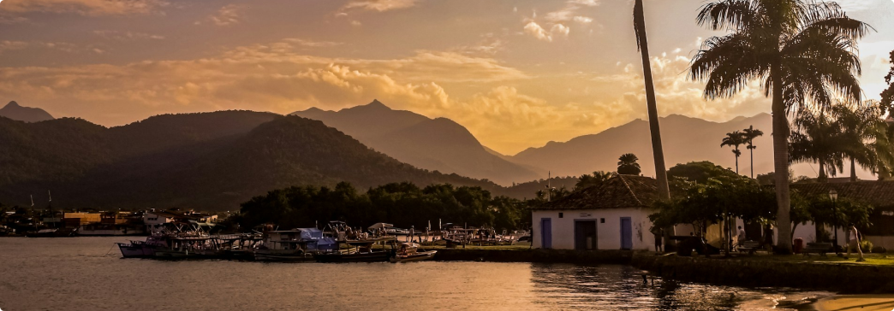

Por que eu me apaixonei por Paraty em um fim de semana
Eu nunca pensei que um lugar pudesse me conquistar tão rápido quanto Paraty. Cheguei na sexta à noite, cansada da estrada, e saí no domingo querendo ficar mais uma semana.
As ruas de pedra, a luz amarelada dos postes coloniais, o som de passos lentos e conversas em voz baixa... tudo parece feito para desacelerar. No sábado de manhã, peguei um barco e conheci pequenas praias em que a água parecia vidro. À noite, me perdi entre lojinhas de artesanato e uma roda de choro que tocava no meio da praça.
O que mais me marcou foi o ritmo. Paraty não te chama para correr, te convida a respirar. E, sinceramente, foi o que eu mais precisava.
Se você ainda não foi, vá. Se já foi, volte. Paraty não é só um destino — é um estado de espírito.